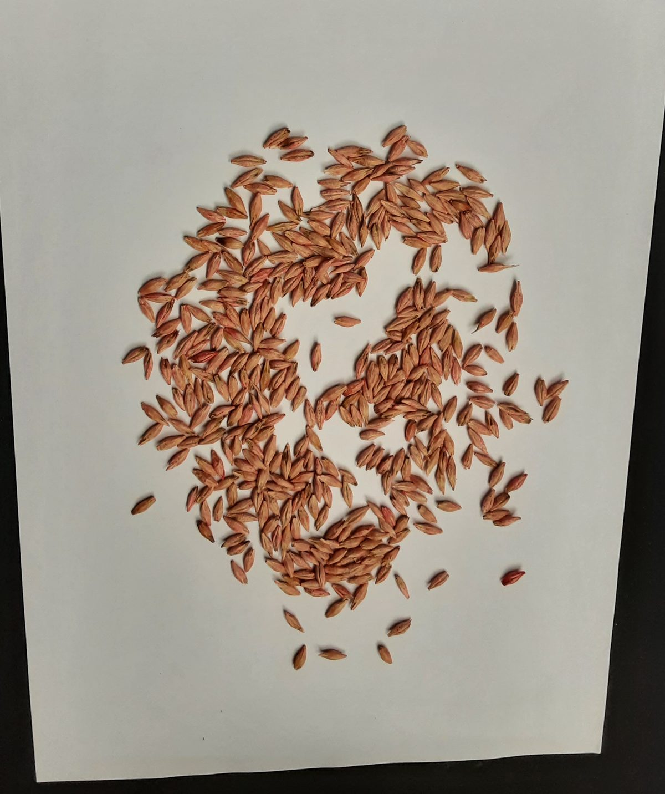

Richtung B · Labor · gewählt 27.10.2026
UI-System der Feld-App
Ruhiges Messinstrument: Graphit auf kühlem Papier, ein Blau für gezählte Körner, viel Luft. Jede Zahl in Mono. Diese Seite nutzt nur tokens.css, tausendkorn.css und motion.js mit den Klassennamen, die app/static/app.js heute schon erzeugt.
--bg #F4F5F3
Seitengrund
Seitengrund
--surface #FFF
Karten, Felder
Karten, Felder
--ink #14181B
16:1 · Text, Hauptknopf
16:1 · Text, Hauptknopf
--ink-2 #434A50
8:1 · Nebentext
8:1 · Nebentext
--rule #B9C0C4
nur Struktur
nur Struktur
--mark #005FB8
gezählt, bestätigt
gezählt, bestätigt
--unsure #E08A00
unsicher (+ Strich)
unsicher (+ Strich)
--unsure-ink #8A4B00
7:1 · Text dazu
7:1 · Text dazu
--bad #A3261B
Fehler (+ ✕ + Wort)
Fehler (+ ✕ + Wort)
h1 34Körner fotografierenbody 18Bruch, Spreu und Steine heraus. Auf weißem A4 glattstreichen.label 13Gewicht dieser Körnernum-l 5447,7g TKGnum-xl 88151kg/has1
s2
s3
s4
s5
s6
Tippziel 60
g
Einige Körner liegen übereinander. Kurz auseinanderstreichen, dann neu fotografieren.
Das Zählen hat nicht geklappt. Ihr Foto ist gespeichert.
Sie können die App schließen. Das Ergebnis erscheint im Verlauf.
6 Stellen prüfenwartet auf Netznicht geklapptPrüfstellen bestätigt

Wintergerste · Hänger 3
27.10. 18:42 · 411 K.
6 Stellen prüfen—
Winterweizen · Hänger 2
27.10. 16:10 · 982 K.
46,3g TKG156kg/ha
411Körner6 Stellen unsicher
Korn antippen: hinzufügen. Punkt antippen: entfernen.
Körner
411
TKG
47,7g
Aussaatmenge
151kg/ha
Spanne 145–157 kg/ha (± 4,0 %, 6 Stellen ungeprüft)
300 keimf. K./m² ÷ 95 % × 47,7 g = 151 kg/ha
316 Körner/m² ablegen · Drillmaschine auf 151 kg/ha abdrehen
316 Körner/m² ablegen · Drillmaschine auf 151 kg/ha abdrehen
- Ein Blau. Es heißt „gezählt“ oder „bestätigt“, sonst nichts.
- Unsicher ist immer gestrichelt, nummeriert und benannt, nie nur orange.
- Jede Zahl in Plex Mono 600, Einheit klein daneben.
- Haarlinien gliedern, tragen aber nie Inhalt.
- Bewegung nur für Zählen, Marke, Unsicher, Ergebnis. Gemessene Zahlen zählen nie hoch.